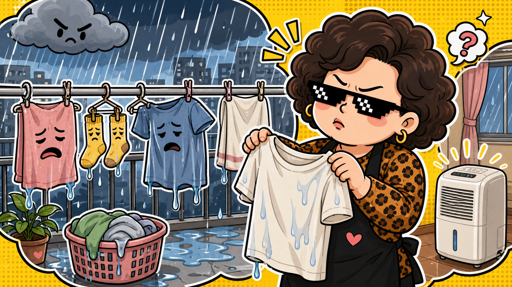

生活新聞 · 真實天氣背景
梅雨季來了：衣服不是沒乾，是在陽台修仙。
台灣一到 5、6 月，陽台就變成衣服修行場。曬衣不是日常，是信仰。
上圖為 AI 生成情境圖，不是新聞現場照片。
阿姨一句話：除濕機不是家電，是梅雨季的家庭情緒穩定器。
中央氣象署的梅雨科普指出，台灣每年 5 月與 6 月屬於梅雨季節，氣候平均上以 5 月中旬到 6 月中旬的降雨機率較高。梅雨鋒面帶來的水氣和不穩定氣流，可能造成連續降雨、局部大雨或豪雨。
這件事聽起來很氣象，但落到生活裡就是：衣服晾三天還有一種「我剛洗完」的自信，鞋櫃開始有自己的味道，家裡每個角落都像在提醒你，空氣也會變黏。
阿姨看到的重點
- 梅雨季不是單純下雨，是濕度、發霉、曬衣和通勤一起來。
- 衣服沒乾時不要硬收進衣櫃，不然衣櫃會開始發展自己的生態系。
- 外出注意氣象預報，遇到大雨或豪雨，山區、溪流和低窪處都不要硬闖。
阿姨碎念版
梅雨季最可怕的不是雨，是你以為衣服乾了，結果穿出門三分鐘，發現它只是外表堅強。這種衣服不能怪它，它也只是被天氣困住。
阿姨建議：陽台不要塞爆，衣服留距離；除濕機開起來，門窗看情況；毛巾和襪子要特別注意。人生已經夠濕了，不要再讓衣櫃一起加入劇情。
事件來源：
中央氣象署數位科普網：梅子成熟傾盆雨